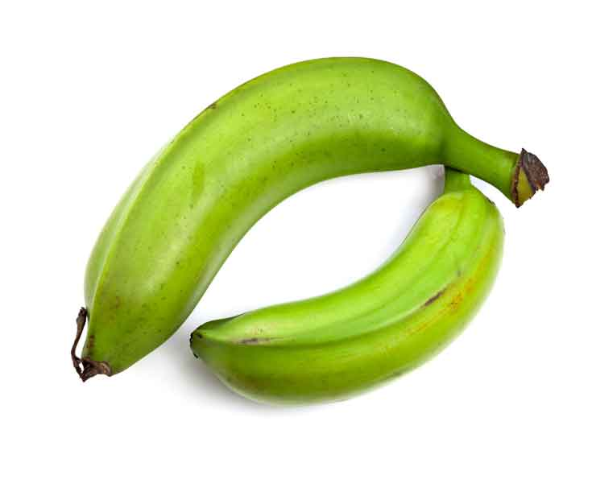
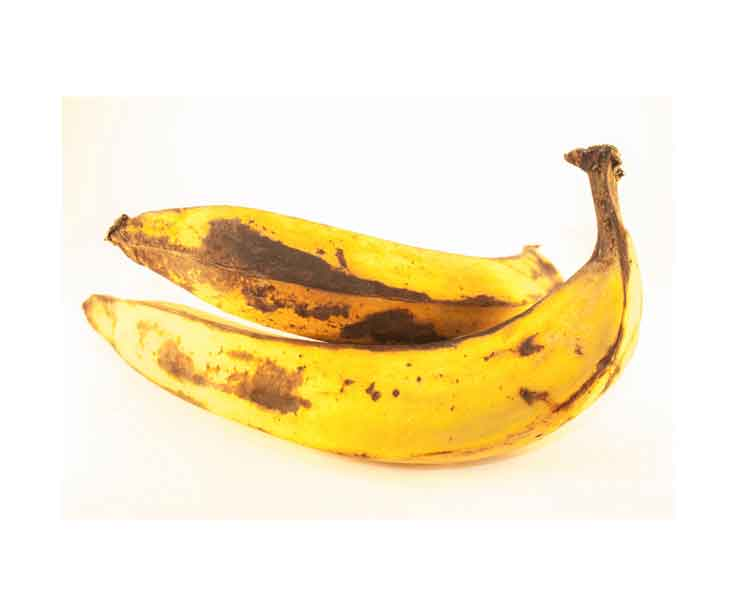
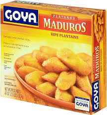
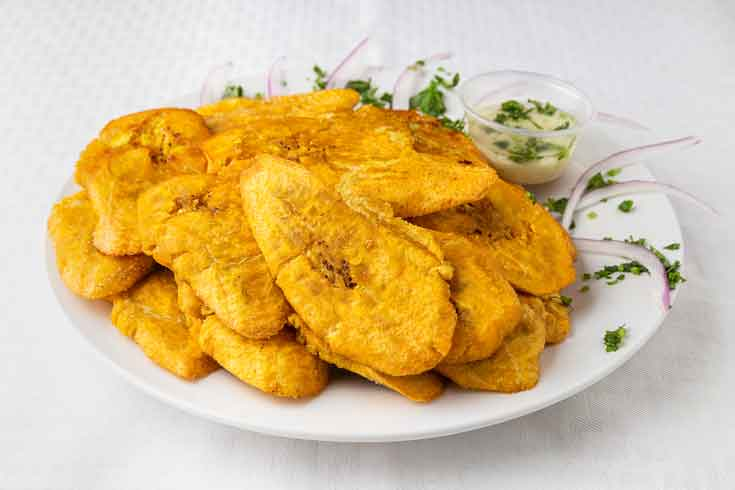
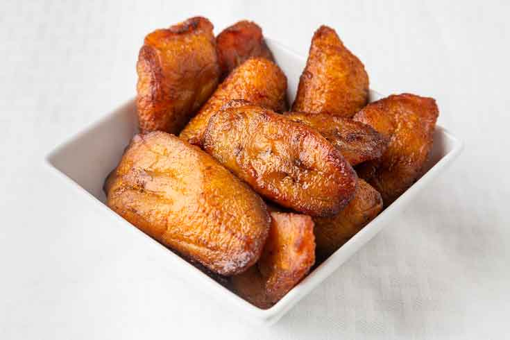
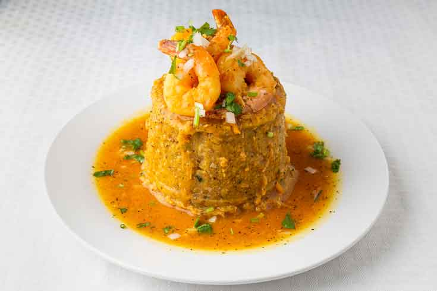
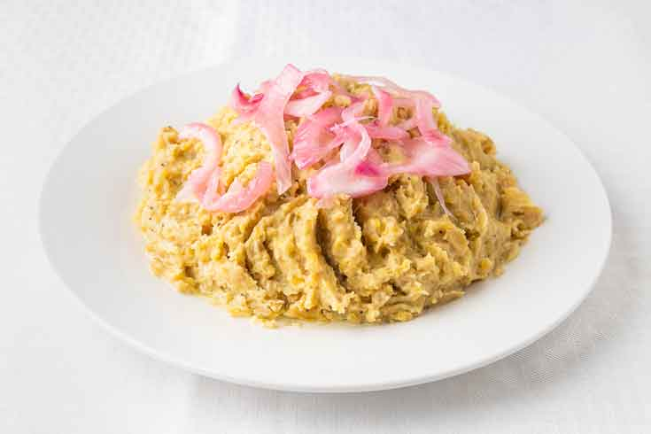

<div class="container" style="width: 80%;margin-top: 64px;max-width: 1080px;margin-bottom: 100px;">
    <div class="row">
        <div class="col col-12 col-md-9">
            <div class="artcont">
                <h1 class="articletitle">PLANTAINS! A STAPLE FOOD IN LATIN AMERICA’S COUSINE</h1><span
                    class="artdata">by admin | Jul 14, 2022 | Uncategorized | 0 comments</span>

                <p><span style="color: rgb(102, 102, 102);">Plantains (plátanos in Spanish) are technically a type
                        of fruit that look like their relative, the banana, but are bigger, harder to peel
                        (especially when green) and cannot be eaten raw. They must be cooked and are considered a
                        staple food of Central and South American, Caribbean, African, and Southeast Asian cuisines.
                        As a nonseasonal crop, plantains are available all year long.</span><br><span
                        style="color: rgb(102, 102, 102);">Plantains are very versatile and typically inexpensive.
                        When green, plantains are bland and starchy, much like a yuca root or potato. Medium ripe
                        plantains are yellow or yellow dappled with black, and they are slightly sweet. When the
                        skins have turned almost black, the plantains are fully ripe, aromatic, and sweet. They are
                        always ready for cooking no matter what stage of ripeness (green, yellow, or black) and used
                        in a variety of dishes, from appetizers to desserts.</span><br><span
                        style="color: rgb(102, 102, 102);">Riverview Fresh Market carries the best selection of
                        green and yellow plantains at a very affordable price! You will find them in the Produce
                        Department. We also carry them in the frozen varieties to cook at home or ready to eat in
                        our Deli-Hot food. If you wish to place and online order of our delicious plantains as a
                        side dish or catering platter, please&nbsp;</span></p>  <a href="https://www.restaurantlogin.com/api/fb/w0_m9_y">Visit our DELI MENU</a>.

                
                imgarticles
                
                


                <p>
                    You can ripen green plantains by storing them at room temperature and out of direct sunlight.
                    Turn them daily. It will take seven to 10 days for green plantains to fully ripen. If you aren’t
                    ready to use them when they’ve reached the desired stage of ripeness, you can peel and freeze
                    them for up to three months.
                </p>

                <p>
                    <strong>What to make with plantains?</strong><br>
                    Check out some delicious dishes prepared with plantains, traditional in the Caribbean and other
                    Latin countries and that you will find in our Deli- Hot food!
                </p>

                <p>
                    <strong>TOSTONES</strong><br>
                    
                    Tostones (also known as Patacones) are slices of unripe, green plantains that have been fried, smashed, and fried again until crisp.
                </p>

                <p>
                    <strong>MADUROS</strong><br>
                    
                    Maduros are simply ripened plantains. When ripe, plantains become sweet, and the skin starts turning yellow. As it continues to ripen, the skin starts turning black and the more black the skin is the sweeter the plantain. Maduros can be cooked fried, boiled, and baked.
                </p>

                <p>
                    <strong>MOFONGO</strong><br>
                    
                    Mofongo is a popular Puerto Rican dish made with fried green plantains mashed with chicharrones (crispy pork skin) and garlic. It’s traditionally served with a red shrimp sauce (camarones guisados) or chicken broth and makes a super delicious dish.    
                </p>


                <p>
                    <strong>PUERTO RICAN SHEPERD´S PIE “PASTELON”</strong><br>
                    
                    Pastelón is a classic Puerto Rican dish made with layers of thinly sliced plantains, ground beef, and cheese! Think of it as a Puerto Rican version of lasagna. It’s the perfect casserole to make for a potluck or family gathering. 
                </p>


                <p>
                    <strong>MANGU, BREAKFAST MASH</strong><br>
                    
                    Mangú is a popular Dominican side dish that’s made with mashed plantains and can be served with meat, eggs, and cheese.                  
               </p>


               <p><strong> these delicious dishes are available to purchase online!</strong> <a href="" target="_blank">Visit our DELI MENU </a></p>
            </div>
        </div>
    
        <div class="col col-12 col-md-3 recentcol">
            <h1>Recent post</h1>
            <app-menuarticles></app-menuarticles>
        
        </div>
    </div>
</div>